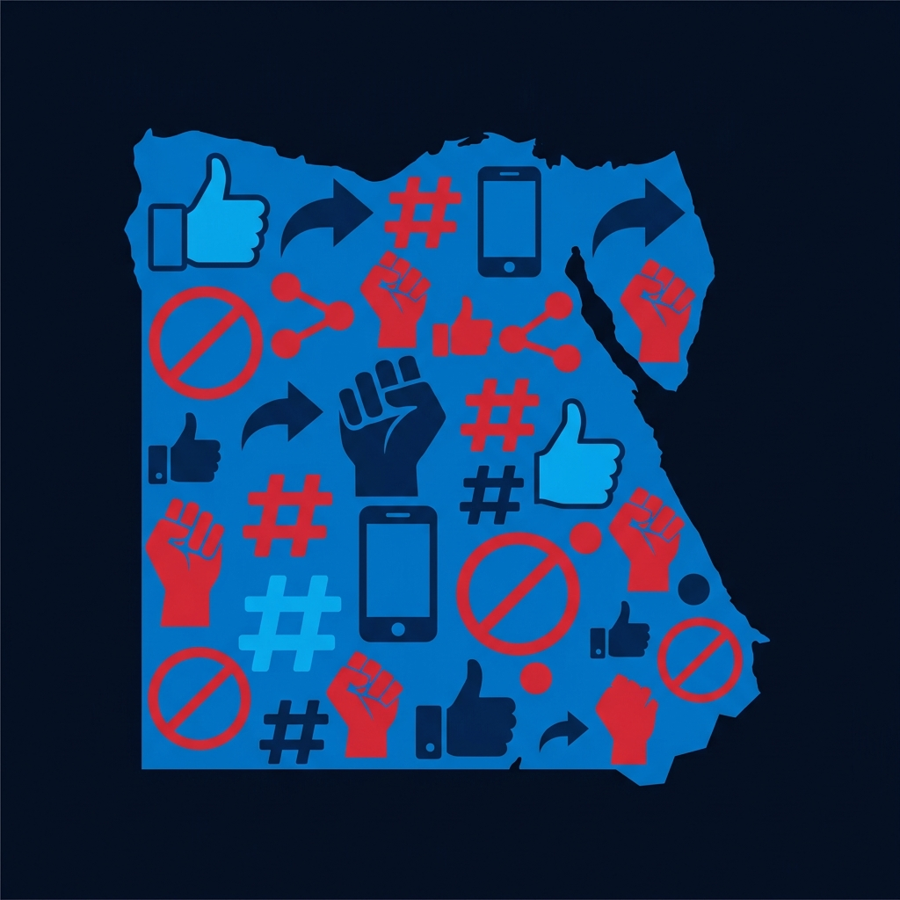
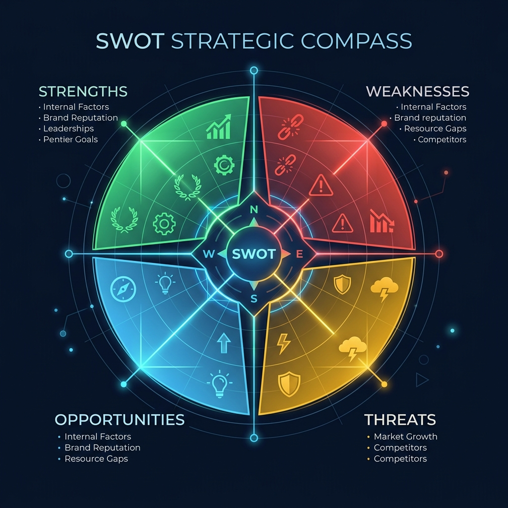
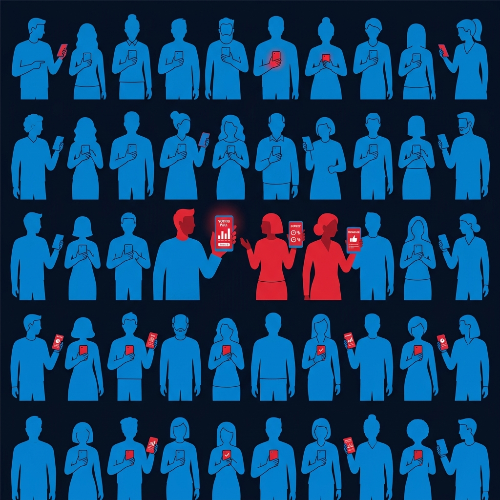
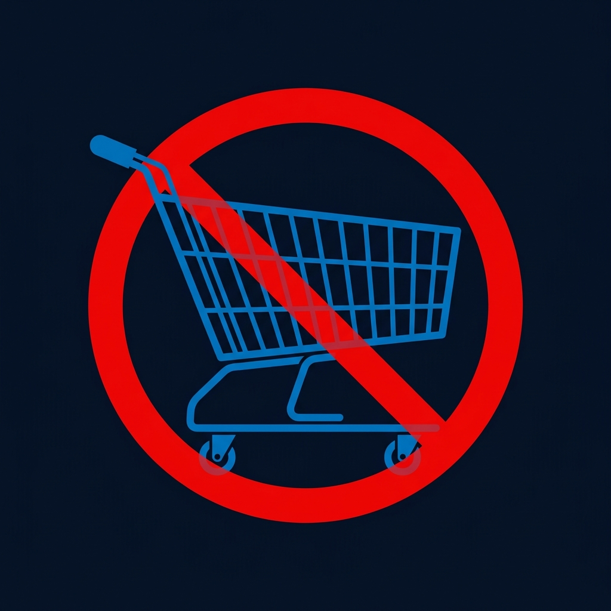
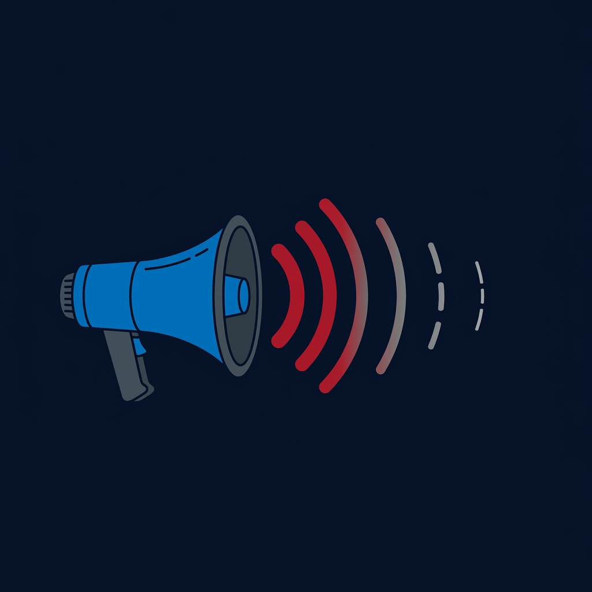
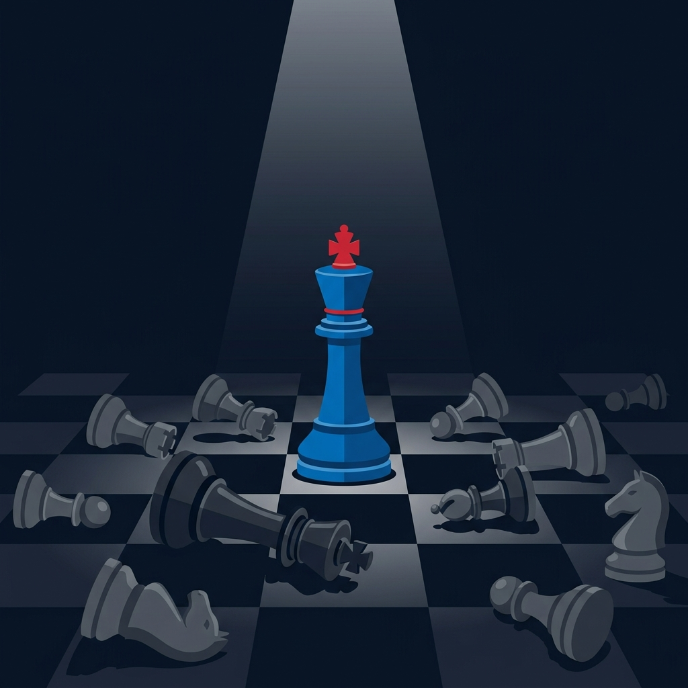
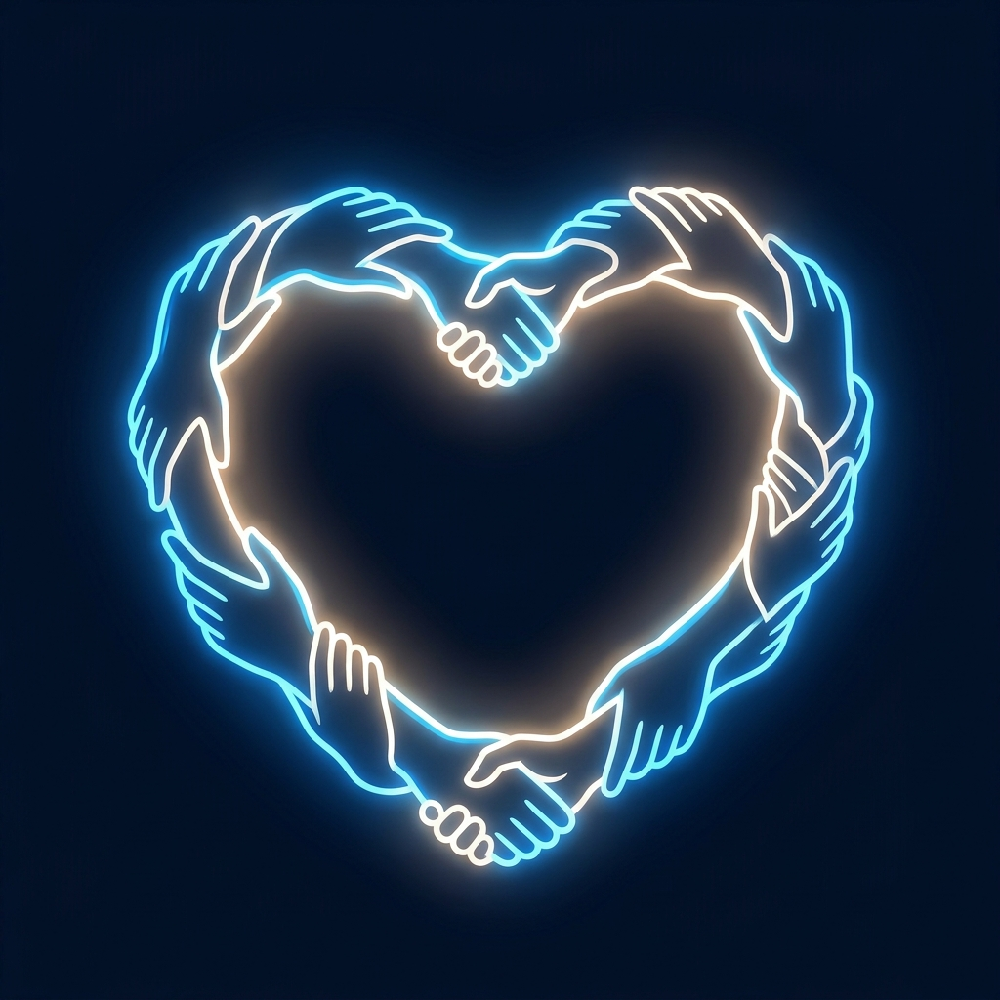

The 2023 Boycott Crisis — How a beverage giant navigated geopolitical turbulence in one of its most vital MENA markets
← → or click arrows to navigate

01 — IntroductionFollowing the escalation of the Israeli-Palestinian conflict in October 2023, Egyptian consumers launched a massive boycott against Western-affiliated brands. PepsiCo — despite decades of deep local roots through brands like Chipsy and 7UP — found itself at the epicenter.
Egypt maintained public neutrality while PepsiCo's SodaStream & Strauss Group ties made it a primary boycott target
11% inflation & pound devaluation — consumers already strained, switching to cheaper local alternatives was effortless
Young, digitally native population with deep Palestinian solidarity — boycotting became cultural identity
Boycott lists went viral in hours via TikTok, WhatsApp & X — outpacing any corporate response
No formal legislation banning products, but institutional backing of boycotts through unions and syndicates
Sustainability narratives weakened as consumers prioritized ethical sourcing over eco-claims

04 — Strategic Assessment
05 — Primary Research58 respondents — all living in Egypt during the 2023 crisis
🔑 Boycott participation spanned all age groups, genders & income levels — driven by emotion, not economics

06 — Survey Findings87% of consumers altered their purchasing — 88% switched to local brands
The boycott was emotionally driven — not economic. PepsiCo's rational response completely missed this.

08 — Response EvaluationPattern: PepsiCo consistently underestimates emotional drivers and defaults to defensive, economics-focused responses
Crisis was emotionally driven by Palestinian solidarity. PepsiCo responded with rational economic arguments — "we create jobs" — completely ignoring the emotional core.
79% of consumers were completely unaware of any response. PepsiCo failed to reach its audience on the platforms where outrage was voiced — TikTok, X, WhatsApp.
Communication was delayed, vague, and indirect. Stakeholders couldn't understand the company's stance — trust eroded, misinformation filled the vacuum.

12 — RecommendationsMulti-functional local team — PR, legal, cultural advisors — trained for MENA-specific rapid response, bypassing global bureaucracy
Shift from defensive "we provide jobs" to empathetic acknowledgement of emotional distress — no corporate PR spin
Deploy messaging on TikTok & X via empathetic Egyptian spokespersons — replace faceless corporate press releases
Launch unbranded humanitarian support in Egypt & Palestine — actions over press releases, goodwill through deeds
Sell SodaStream, end Strauss Group equity — create a neutral stance that doesn't fund occupation or alienate MENA buyers
Sophisticated monitoring tools to detect early boycott signals — preemptive mitigation before virality

Conclusion
PepsiCo's 2023 Egypt boycott was not a failure of product or pricing —
it was a failure of emotional intelligence. When consumers act from
the heart, brands must respond from the heart.
Thank you.